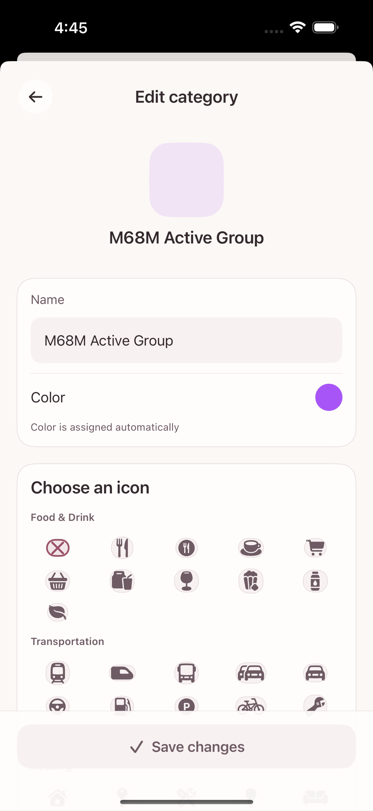

Categories are managed from the Category row in the Manage menu (on iPhone, the drawer you open with the top menu button; on iPad and Mac, the "Categories & automation" section of Settings). The screen is titled Manage Categories.
Categories have two levels: top-level groups (the broad branches of expense and income) and subcategories beneath them.
When you create one you enter only a name — there is no icon or color picker at that point. To change the icon you reopen the category and go into the edit screen, where a Choose an icon grid appears and you can pick any SF Symbol. Colors cannot be chosen; they are always assigned automatically. A top-level group with no subcategories cannot be used on a transaction directly.
Tap Edit order in the top bar to drag the top-level groups into a different order, and to reorder the subcategories within each group.

The Choose an icon grid on the category edit screen
When you stop using a category, archiving it rather than deleting is the norm. A category already used by past transactions is not deleted outright, so that those records stay intact (see chapter 14 for the exceptions).
Managing budget groups and tags
The Budget groups & tags row in the same Manage menu handles both.
A budget group bundles several categories under one spending limit (see chapters 2 and 6). This screen is where you create a group and decide which categories belong to it.
A tag is a label you attach freely to individual transactions, independently of categories (for example #travel, #awaiting-refund). One tag can gather transactions that cut across several categories and accounts.
This screen also has the Edit order ↔ Complete buttons for changing the display order of groups and tags.
Categories and budget groups are independent
Creating a category and connecting that category to a budget group are two different decisions. If you create a category but do not connect it to a budget group, spending in it does not count against any particular group — it reduces the overall Available to allocate (pool). Chapter 6 works through the arithmetic.